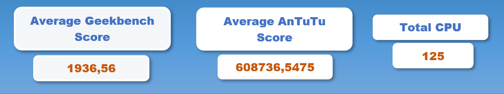
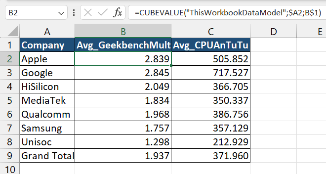
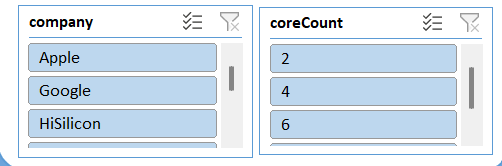
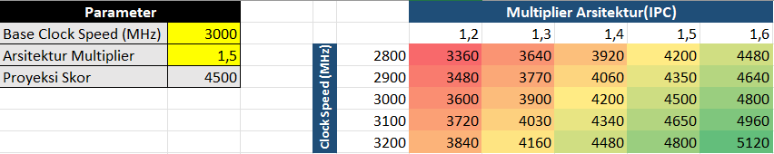

Smartphone CPU Performance Dashboard
An interactive Business Intelligence dashboard built in Microsoft Excel to process and evaluate smartphone processor benchmark data, using DAX measures, interactive slicers, and What-If Analysis for multi-variable chipset comparison.
Dashboard Preview
A static preview of the Excel dashboard is embedded below. The slicers, DAX measures, and What-If Analysis are interactive BI features that only run in the full Excel app — open or download the workbook to explore them fully.
Overview
This project delivers an interactive Business Intelligence reporting dashboard that processes and evaluates a smartphone processor performance benchmark dataset. The goal was to turn raw benchmark numbers into a decision-ready view where chipset performance can be compared across multiple variables.
What I Did
- Built an interactive Business Intelligence reporting dashboard to process and evaluate a smartphone processor performance benchmark dataset.
- Developed custom DAX-based measures and interactive slicers to present multi-variable comparisons of chipset performance KPIs.
- Applied What-If Analysis simulations to model device performance scenarios as a basis for data-driven decision making.
Data Modeling Approach
The dashboard is built on a multidimensional data model using Power Pivot, with DAX measures for calculated KPIs and Cube Functions for flexible reporting layouts. Interactive slicers let a user filter and compare chipsets on demand, while What-If Analysis parameters simulate alternative performance scenarios.
Tech Stack
What I Learned
- How to design a multidimensional data model and write DAX measures for calculated KPIs.
- Using slicers and Cube Functions to build a flexible, interactive reporting layout.
- Applying What-If Analysis to support data-driven decisions rather than static reporting.
Gallery




